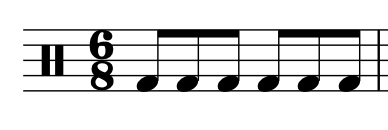

Open Music Theory：繁體中文版
複拍子與拍號
查看英文原文
Key Takeaways
- Compound meters are meters in which the beat divides into three and then further subdivides into six.
- Duple meters have groupings of two beats, triple meters have groupings of three beats, and quadruple meters have groupings of four beats. You can determine these groupings aurally by listening carefully and tapping along to the beat.
- There are different conducting patterns for duple, triple, and quadruple meters; these are the same in both compound and simple meters.
- Time signatures in compound meters express two things: how many divisions are contained in each measure (the top number), and the division unit—which note gets the division (the bottom number).
- Rhythms in compound meters get different counts based upon their division unit. Beats that are not articulated (because they contain more than one beat or because of ties, rests, or dots) receive parentheses around their counts.
In the previous chapter, Simple Meter and Time Signatures, we explored rhythm and time signatures in simple meters—meters in which the beat divides into two and further subdivides into four. In this chapter, we will learn about compound meters—meters in which the beat divides into three and further subdivides into six.
一般而言，採用複拍子的音樂較少見。不過，要掌握西方音樂記譜法，仍須學會閱讀並演奏這類拍子的音樂。
請複習上一章的單拍子指揮圖式；複拍子也使用相同的圖式。
查看英文原文
Listening to and Conducting Compound Meters
Compound meters can be duple, triple, or quadruple, just like simple meters. In other words, the beats of compound meters group into sets of either two, three, or four. The difference is that each beat divides into three divisions instead of two, as you can hear by listening carefully to the following examples:
-
“Godzilla” (2017) by Kesha is in a duple meter—the beats group into a two pattern. Tap along to the beat and notice how it divides into three parts instead of two. If you further divide the beat (by tapping twice as fast), you will feel that the beat subdivides into six parts.
- The second movement (Minuet) of Franz Joseph Haydn's Sonata no. 42 in G Major (1784) is in a compound triple meter. Listen for the groupings of three beats, each of which divides into three.
- Finally, a compound quadruple meter contains four beats, each of which divides into three. Listen to "Exogenesis Symphony Part III" (2010) by the alternative rock band Muse. This is in a compound quadruple meter; in other words, the beats are grouped into a four pattern.
In general, it is less common for music to be written in compound meters. Nonetheless, you must learn how to read music and perform in these meters in order to master Western musical notation.
Review the conducting patterns for simple meters in the previous chapter, as they are the same for compound meters.
複拍子的每個小節和單拍子一樣，都相當於一組拍（兩拍、三拍或四拍）。不過，複拍子拍號的兩個數字表示的資訊不同。上方數字表示每小節的拍內分割總數，下方數字表示分割單位，也就是用哪一種音符時值代表每一等分。譜例 1是一種常見的複拍子拍號。

和單拍子一樣，複拍子的拍號不是分數（兩個數字之間沒有橫線），並寫在五線譜的譜號後方。譜例 1上方的數字 6 表示每小節有六個分割單位；下方的數字 8 表示以八分音符作為分割單位。因此，這個拍號的每小節可容納六個八分音符；查看譜例 1即可確認。
複拍子的上方數字一定是三的倍數。將這個數字除以三，就能得到與單拍子相對應的每小節拍數：上方數字為 6、9、12 時，分別對應二拍子、三拍子、四拍子。複拍子的下方數字通常是以下其中一種：
- 8：以八分音符作為分割單位。
- 4：以四分音符作為分割單位。
- 16：以十六分音符作為分割單位。
下表整理了目前介紹過的六類拍子：
| 單拍子或複拍子？ | 二拍子、三拍子或四拍子？ | 每組拍數 | 每拍分割數 | 拍號範例 |
|---|---|---|---|---|
| 單拍子 | 二拍子 | 2 | 2 | [latex]\mathbf{^2_4} \quad \mathbf{^2_8} \quad \mathbf{^2_2} \quad \mathbf{^{\:2}_{16}}[/latex] |
| 單拍子 | 三拍子 | 3 | 2 | [latex]\mathbf{^3_4} \quad \mathbf{^3_8} \quad \mathbf{^3_2} \quad \mathbf{^{\:3}_{16}}[/latex] |
| 單拍子 | 四拍子 | 4 | 2 | [latex]\mathbf{^4_4} \quad \mathbf{^4_8} \quad \mathbf{^4_2} \quad \mathbf{^{\:4}_{16}}[/latex] |
| 複拍子 | 二拍子 | 2 | 3 | [latex]\mathbf{^6_8} \quad \mathbf{^6_4} \quad \mathbf{^{\:6}_{16}}[/latex] |
| 複拍子 | 三拍子 | 3 | 3 | [latex]\mathbf{^9_8} \quad \mathbf{^9_4} \quad \mathbf{^{\:9}_{16}}[/latex] |
| 複拍子 | 四拍子 | 4 | 3 | [latex]\mathbf{^{12}_{\:8}} \quad \mathbf{^{12}_{\:4}} \quad \mathbf{^{12}_{16}}[/latex] |
譜例 2。拍子的分類。
以下練習可幫助你熟悉複拍子的拍號：
查看英文原文
Time Signatures
Measures in compound meters are equivalent to one beat grouping (duple, triple, or quadruple), just as they are in simple meters. However, the two numbers in the time signature express different information for compound meters. The top number of a time signature in compound meter expresses the number of divisions in a measure, while the bottom number expresses the division unit—which note value is the division. Example 1 shows a common compound-meter time signature.
Just like in simple meter, compound-meter time signatures are not fractions (and there is no line between the two numbers), and they are placed after the clef on the staff. In Example 1, the top number (6) means that each measure will contain six divisions; the bottom number (8) means that the eighth note is the division. This means that each measure in this time signature will contain six eighth notes, as you can verify by examining Example 1.
In compound meters, the top number is always a multiple of three. Divide this number by three to find the corresponding number of beats in simple meter: top numbers of 6, 9, and 12 correspond to duple, triple, and quadruple meters respectively. In compound meters, the bottom number is usually one of the following:
- 8, which means the eighth note receives the division.
- 4, which means the quarter note receives the division.
- 16, which means the sixteenth note receives the division.
The following table summarizes the six categories of meters that we have covered so far:
| Simple or Compound? | Duple, Triple, Quadruple? | Beat Grouping | Beat Division | Example Time Signatures |
|---|---|---|---|---|
| Simple | Duple | 2 | 2 | [latex]\mathbf{^2_4} \quad \mathbf{^2_8} \quad \mathbf{^2_2} \quad \mathbf{^{\:2}_{16}}[/latex] |
| Simple | Triple | 3 | 2 | [latex]\mathbf{^3_4} \quad \mathbf{^3_8} \quad \mathbf{^3_2} \quad \mathbf{^{\:3}_{16}}[/latex] |
| Simple | Quadruple | 4 | 2 | [latex]\mathbf{^4_4} \quad \mathbf{^4_8} \quad \mathbf{^4_2} \quad \mathbf{^{\:4}_{16}}[/latex] |
| Compound | Duple | 2 | 3 | [latex]\mathbf{^6_8} \quad \mathbf{^6_4} \quad \mathbf{^{\:6}_{16}}[/latex] |
| Compound | Triple | 3 | 3 | [latex]\mathbf{^9_8} \quad \mathbf{^9_4} \quad \mathbf{^{\:9}_{16}}[/latex] |
| Compound | Quadruple | 4 | 3 | [latex]\mathbf{^{12}_{\:8}} \quad \mathbf{^{12}_{\:4}} \quad \mathbf{^{12}_{16}}[/latex] |
Example 2. Categories of meters.
You can practice compound meter time signatures in the following exercise:
數複拍子的節奏時，建議同時打指揮，以維持穩定的速度。由於複拍子的每拍分成三等分，代表一拍的音符一定帶有附點。複拍子的拍單位如下：
- 若下方數字是 8，一拍就是附點四分音符（相當於三個八分音符）。
- 若下方數字是 4，一拍就是附點二分音符（相當於三個四分音符）。
- 若下方數字是 16，一拍就是附點八分音符（相當於三個十六分音符）。
單拍子的每拍分成兩等分，第一部分有重音，第二部分沒有重音。複拍子的每拍分成三等分，第一部分有重音，第二、第三部分沒有重音。複拍子的數拍方式與單拍子不同，採用 [latex]\mathbf{^6_8}[/latex] 拍的譜例 3示範了這個差別。
譜例 3。複二拍子的數拍方式。
這個拍號每小節有兩拍（6÷3=2），因此是二拍子。每個附點四分音符（一拍）都要數一個拍數，和單拍子一樣，用阿拉伯數字表示。音符若長於一拍，例如譜例 3第四小節的附點二分音符，沒有念出來的拍數仍寫在括號中。拍內分割使用「la」（拍數後的第一個分割）與「li」（拍數後的第二個分割）來數。譜例 3的最後一小節顯示，進一步細分至十六分音符時，以「ta」數新增的分割；八分音符位置上的「la」與「li」則保持不變。
譜例 3第三小節列出兩種最常見、包含拍內分割的複拍子節奏。若你還不熟悉複拍子，請務必仔細複習這個小節。
請注意，老師可能採用不同的數拍系統。《Open Music Theory》主要使用美國傳統數拍法，但這並非唯一的方法。
譜例 4分別示範（a）二拍子、（b）三拍子與（c）四拍子的節奏。和單拍子一樣，複二拍子只有兩拍，複三拍子有三拍，複四拍子有四拍。
和單拍子一樣，因休止符或延音線而沒有另行起音的拍，要將拍數寫在括號內，不念出來，如譜例 5所示。不過，附點節奏不會像單拍子那樣，因附點而需要將拍數加上括號，因為複拍子是以附點音符作為一拍。
譜例 5。不念出來的拍數放在括號內。
以下練習可幫助你熟悉單拍子與複拍子中，音符和休止符的等值關係：
查看英文原文
Counting in Compound Meter
While counting compound meter rhythms, it is recommended that you conduct in order to keep a steady tempo. Because beats in compound meter divide into three, they are always dotted. Beats in compound meter are as follows:
- If 8 is the bottom number, the beat is a dotted quarter note (equivalent to three eighth notes).
- If 4 is the bottom number, the beat is a dotted half note (equivalent to three quarter notes).
- If 16 is the bottom number, the beat is a dotted eighth note (equivalent to three sixteenth notes).
In simple meters, the beat divides into two parts, the first accented and the second non-accented. In compound meters, the beat divides into three parts, the first accented and the second and third non-accented. The counts for compound meter are different from simple meter, as demonstrated in Example 3, which is in [latex]\mathbf{^6_8}[/latex].
Example 3. Counting in a compound duple meter.
In this time signature, each measure has two beats (6÷3=2), indicating duple meter. Each dotted quarter note (the beat) gets a count, which is expressed in Arabic numerals, like in simple meter. For notes that are longer than one beat (such as the dotted half note in the fourth measure of Example 3), the beats that are not counted out loud are still written in parentheses. Divisions are counted using the syllables “la” (first division) and “li” (second division). As the final measure of Example 3 shows, further subdivisions at the sixteenth-note level are counted as “ta,” with the “la” and “li” syllables on the eighth-note subdivisions remaining consistent.
The third measure of Example 3 presents two of the most common compound-meter rhythms with divisions, so make sure to review this measure carefully if you are not familiar with compound meter.
Please note that your instructor may employ a different counting system. Open Music Theory privileges American traditional counting, but this is not the only method.
Example 4 gives examples of rhythms in (a) duple, (b) triple, and (c) quadruple meter. Just as with simple meters, compound duple meters have only two beats, compound triple meters have three beats, and compound quadruple meters have four beats.
Like in simple meters, beats that are not articulated because of rests and ties are written in parentheses and not counted out loud, as shown in Example 5. However, dotted rhythms do not cause beats to be written in parenthesis the way they do in simple meter, because in compound meter dotted notes receive the beat.
Example 5. Beats that are not counted out loud are put in parentheses.
You can practice note/rest equivalencies in both simple and compound meter time signatures in the following exercise:
目前為止，我們著重於以附點四分音符為一拍的拍子。採用其他拍單位的複拍子（原文稱其由拍號下方數字表示），也以相同方式數拍及數拍內分割，只是對應的音符時值不同（譜例 6）。
譜例 6。同一個節奏以三種不同的拍單位記譜：（a）附點四分音符、（b）附點二分音符、（c）附點八分音符。
這幾個節奏聽起來相同，數拍方式也相同，而且都屬於複三拍子。不同之處是拍號下方數字，也就是哪一種音符作為分割單位（八分、四分或十六分音符），而分割單位又決定了拍單位。
查看英文原文
Counting with Division Units of 4 and 16
So far, we have focused on meters with a dotted-quarter beat. In compound meters with other beat units (shown in the bottom number of the time signature), the same counting patterns are used for the beats and subdivisions, but they correspond to different note values (Example 6).
Example 6. The same rhythm written with three different beat units: (a) dotted quarter, (b) dotted half, and (c) dotted eighth.
Each of these rhythms sounds the same and is counted the same. They are also all considered compound triple meters. The difference in each example is the bottom number—which note gets the division unit (eighth, quarter, or sixteenth), which then determines the beat unit.
複拍子的符槓仍然按拍將音符連接起來，因此不同拍號的符槓分組也會不同。在譜例 7第一小節中，十六分音符每六個一組，因為 [latex]\mathbf{^6_8}[/latex] 拍中的六個十六分音符相當於一拍。在譜例 7第二小節中，十六分音符每三個一組，因為 [latex]\mathbf{^{\:6}_{16}}[/latex] 拍中的三個十六分音符相當於一拍。
只要音樂用到短於四分音符的時值，不論是單拍子或複拍子，都應用符槓清楚呈現拍節。譜例 8顯示十二個十六分音符在兩種拍子中的正確分組。第一小節是單拍子，因此每四個音符按拍組成一組；第二小節是複拍子，因此必須每六個音符按拍組成一組。
{kind=link}
單拍子的符幹與符尾規則也適用於複拍子。對於中線上方的音符，符幹與符尾朝下，位於音符左側；對於中線下方的音符，符幹與符尾朝上，位於音符右側。中線上的音符可以朝任一方向，要視周圍的音符而定。
和單拍子一樣，混合不同時值的節奏分組也可使用短符槓。若你還不熟悉這些慣例，請特別留意譜例 9的音符如何以符槓連接。
- Bent, Ian D. 等。2001。〈Notation〉（記譜法）。Grove Music Online。https://doi.org/10.1093/gmo/9781561592630.article.20114。
- Gerou, Tom 與 Linda Lusk。1996。Essential Dictionary of Music Notation（音樂記譜必備辭典）。洛杉磯：Alfred。
- Gould, Elaine。2011。Behind Bars: the Definitive Guide to Music Notation（小節線背後：音樂記譜權威指南）。倫敦：Faber Music。
- London, Justin。2001。〈Metre〉（拍節）。Grove Music Online。https://doi.org/10.1093/gmo/9781561592630.article.18519。
- McGrain, Mark。1986。Music Notation（音樂記譜法）。波士頓：Berklee Press。
- Roemer, Clinton。1985。The Art of Music Copying: The Preparation of Music for Performance（抄譜的藝術：為演出準備樂譜），第 2 版。Sherman Oaks：Roerick Music Company。
- Spitzer, John 等。2021。〈Conducting〉（指揮）。Grove Music Online。https://doi.org/10.1093/gmo/9781561592630.article.06266。
媒體出處與授權
- 〈複拍子拍號〉© Chelsey Hamm，採用 CC BY-SA（姓名標示—相同方式分享）授權。
- 〈單拍子與複拍子的符槓分組〉© Mark Gotham，採用 CC BY-SA（姓名標示—相同方式分享）授權。
查看英文原文
Beaming, Stems, and Flags
In compound meters, beams still connect notes together by beat; beaming therefore changes in different time signatures. In the first measure of Example 7, sixteenth notes are grouped into sets of six, because six sixteenth notes in a [latex]\mathbf{^6_8}[/latex] time signature are equivalent to one beat. In the second measure of Example 7, sixteenth notes are grouped into sets of three, because three sixteenth notes in a [latex]\mathbf{^{\:6}_{16}}[/latex] time signature are equivalent to one beat.
When the music involves note values smaller than a quarter note, you should always clarify the meter with beams, regardless of whether the time signature is simple or compound. Example 8 shows twelve sixteenth notes beamed properly in two different meters. The first measure is in simple meter, so the notes are grouped by beat into sets of four; in the second measure, the compound meter requires the notes to be grouped by beat into sets of six.
The same rules of stemming and flagging that applied in simple meter still apply in compound meter. For notes above the middle line, stems and flags point downward on the left side of the note, and for notes below the middle line, stems and flags point upward on the right side of the note. Stems and flags on notes on the middle line can point in either direction, depending on the surrounding notes.
Like in simple meters, partial beams can be used for mixed rhythmic groupings. If you aren’t yet familiar with these conventions, pay special attention to how the notes in Example 9 are beamed.
- Bent, Ian D. et al. 2001. “Notation.” Grove Music Online. https://doi.org/10.1093/gmo/9781561592630.article.20114.
- Gerou, Tom and Linda Lusk. 1996. Essential Dictionary of Music Notation. Los Angeles: Alfred.
- Gould, Elaine. 2011. Behind Bars: the Definitive Guide to Music Notation. London: Faber Music.
- London, Justin. 2001. "Metre." Grove Music Online. https://doi.org/10.1093/gmo/9781561592630.article.18519.
- McGrain, Mark. 1986. Music Notation. Boston: Berklee Press.
- Roemer, Clinton. 1985. The Art of Music Copying: The Preparation of Music for Performance, 2nd edition. Sherman Oaks: Roerick Music Company
- Spitzer, John et al. 2021. "Conducting." Grove Music Online. https://doi.org/10.1093/gmo/9781561592630.article.06266.
- Compound Meter Tutorial (musictheory.net) (compound meter starts about halfway through)
- Simple vs. Compound Time Signatures (YouTube) (start at 1:49 for compound meter)
- Compound Meter Counting and Time Signatures (John Ellinger)
- Compound Meter Counting (YouTube)
- Compound Meter Rhythmic Practice (YouTube)
- Compound Meter Beaming (Michael Sult)
- Meter Identification (Simple and Compound) (.pdf,), and pp. 1–2 (.pdf)
- Meter Beaming (Simple and Compound), pp. 4 and 5 (.pdf)
- Counting in 6/8 (.pdf, .pdf, .pdf)
- Time Signatures (.pdf, .pdf, .pdf)
- Completing Measures with Rests, pp. 5–6 (.pdf)
- Bar Lines (.pdf), p. 2 (.pdf), and pp. 3–4 (.pdf)
- Transcribing Between Simple and Compound Meters, pp. 9–10 (.pdf)
- Listening and Mixed Questions (website)
- Compound Notes, Rests, and Bar Lines (.pdf, .docx)
- Rebeaming Compound Rhythmic Notation (.pdf, .mscz)
Media Attributions
- Compound Meter Time Signature © Chelsey Hamm is licensed under a CC BY-SA (Attribution ShareAlike) license
- Simple and Compound Beaming © Mark Gotham is licensed under a CC BY-SA (Attribution ShareAlike) license